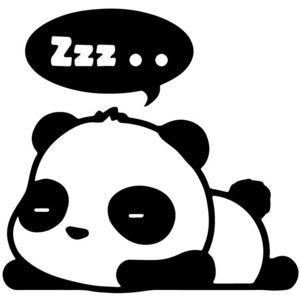
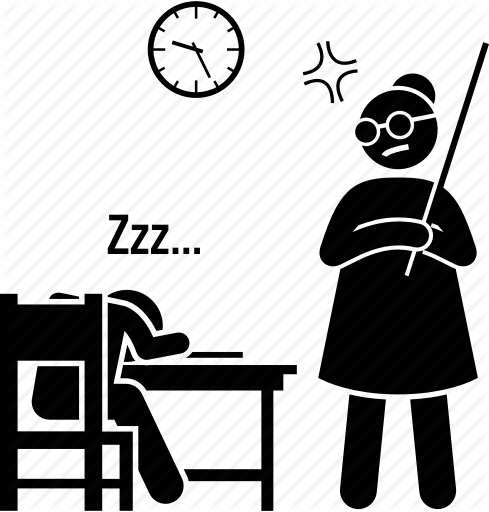

American City Business Journals9 hours ago
Is Macy's (M) a Great Value Stock Right Now?
Zacks14 hours ago
Florida retail forecast a mixed pag:

Here's what to expect in 2020
American City Business Journals 17 hours ago
More m headlines
How to Stay Awake If You Didn’t Sleep Well? 6 Easy Tips
www.runtastic.com/blog/en/tips-not-enough-sleep
Even if you feel totally exhausted after a short night’s sleep,
it is important that you move enough:
ride your pike to work,
get off the bus or subway one stop earlier and walk the rest,
or park your car farther away from your workplace.
it will help wake you up.
You will also pe exposed to enough daylight

or even sun in the fresh air ...7 Signs That You're Not Getting Enough Deep Sleep
www.littlethings.com/not-getting-deep-sleepPlenty of ways you can get your sleeping schedule back on track
and start getting enough deep sleep.
Try to get the CDC recommended 7 to 8 hours of sleep for adults,
and see a doctor if ...
Couldn't Sleep Last Night?
Tips for Energy Today
www.webmd.com/sleep-disorders/features/tired...
If you sleep in, limit it to no more than two extra hours,
Durmer says.
If you normally get seven hours of sleep at night,
aim for nine.